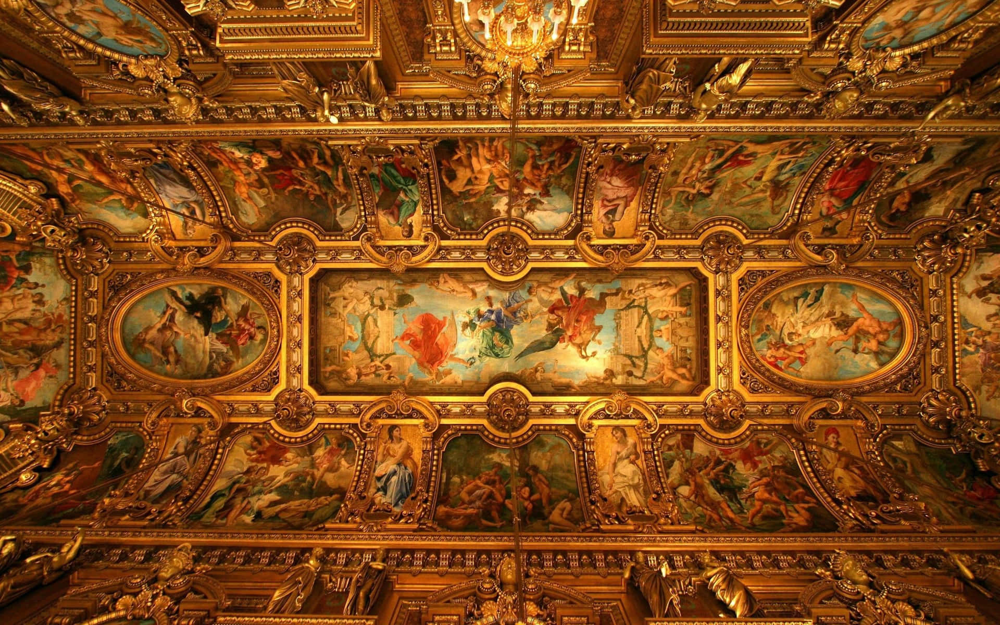

Why Restore Art?
Art restoration helps maintain the integrity and longevity of paintings, sculptures, and other artworks. It protects them from damage, preserves their value, and keeps them visually appealing.
Tips for Art Restoration
- Assess the artwork: Identify damages like cracks, discoloration, or peeling paint.
- Clean gently: Use soft brushes or cloths to remove surface dust and dirt.
- Avoid moisture: Keep art away from high humidity and direct water exposure.
- Repair minor damages: Use suitable materials for touch-ups, like acrylic or oil paints for paintings.
- Frame properly: Ensure frames are secure and protective glass is clean.
Tricks for Art Preservation
Keep your art in pristine condition with these tricks:
- Use UV-protective glass or acrylic to prevent fading from sunlight.
- Store paintings and delicate art in climate-controlled environments.
- Handle artwork with clean hands or gloves to avoid transferring oils or dirt.
- For sculptures, use microfiber cloths to polish and maintain the surface.
.webp)